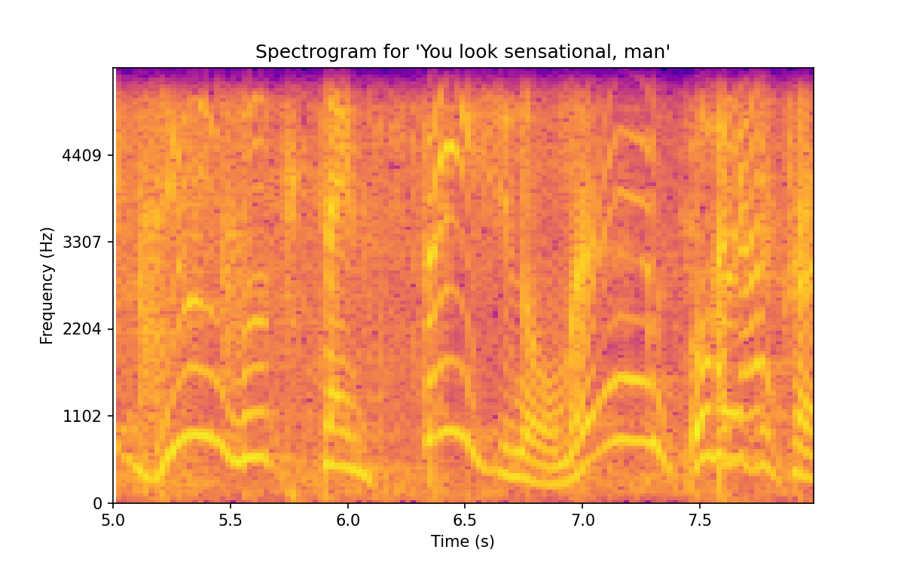

ETL
From audio to text
Table of Contents
1. Initial Setup
1.1. Poetry
We are going to install everything under a poetry project. So the first thing is to initialize poetry and add the whisper dependency. Then we will add our fork of the whisper repository as submodule of this repo and then add all the dependencies to the poetry environment.
poetry init
poetry add git+https://github.com/openai/whisper.git
git submodule add git@github.com:AlbertoV5/whisper.git whisper
cat whisper/requirements.txt | xargs poetry add
Finall we will install ffmpeg globally as we also need it for running whisper.
brew install ffmpeg
1.2. Test Case
We already have our specifications so we are going to start with a basic test:
- Load a mp4 file through
whisperand compare the result with a transcipt made by a human.
We are going to add the test to the repository but we won’t upload any mp4 file so we will ignore them with **/*.mp4 in our .gitignore.
1.3. Dealing with audio
We are going to start by converting the .mp4 video file to a .wav file, which is audio only.
ffmpeg -i resources/test/test.mp4 resources/test/test.wav
We are going to change the conversion settings because our source is already compressed at a bitrate of 192kbps. This means that there is no information in the higher frequencies starting at around 16khz. However, we expect some files to be even more compressed so we are just gonna set our limit to 12khz which brings the smaple rate to 24khz (double the nyquist).
Then we are going to reduce the number of channels from 2 to 1. In an ideal scenario, we would do this by encoding to M/S (midside) and then getting rid of the side channel but we are going to stop at the ffmpeg interface and provide the -ac 1 flag instead. In the future we can improve the process by finding a Midside tool. The reason for using the mid channel only is that TV broadcasts are mixed with the dialog in the center channel.
ffmpeg -i resources/test/test.mp4 -ar 24000 -ac 1 resources/test/test.wav
So in the end we end up with the following audio specifications.
| Format | Channels | Sample Rate | Bits |
|---|---|---|---|
| .wav | 1 | 24000 | 16 |
wavsize
channels = 1 samplerate = 24000 bits = 16 bits_to_mb = lambda x: x / 8e6 print(f"{round(duration * samplerate * channels * bits_to_mb(bits), 2)}")
Our test is about 30 seconds long so our final file size will be: 1.44 MB. Assuming the average episode of the TV Show is no more than 40 minutes long, we would have 57.6 MB of audio to process per episode if we work with .wav files.
We may need to compress to FLAC or MP3 as they are supported by whisper too1.
1.4. Testing the model
Let’s start by running whisper from the command line.
poetry run whisper resources/test/test.wav -o resources/test --language en
We are going to include an MP3 version of the test file in here. Warning: It starts moderately loud.
For context, this is Craig Ferguson complimenting Keanu Reeves.
And here is the transcript from whisper:
head resources/test/test.wav.srt
1 0:00:00.000 --> 0:00:05.000 Man, it's crazy out there. 2 0:00:05.000 --> 0:00:07.000 You look sensational, man. 3 0:00:07.000 --> 0:00:08.000
We can build a test around this just for comparing the different model sizes and helping us chose the parameters for when we scale the process up.
1.5. Scaling the process
We are going to use Assembly AI’s analysis2 to help us decide how to move forward and what technologies we need for running the model with large amounts of data.
Our local CPU takes too long transcribing the 30 seconds and I don’t have a GPU available right now so we are definitely going to the cloud.
1.6. Troubleshooting Dependencies
Before dealing with audio signals, we must deal with a correct scipy installation. Because poetry likes to do things one way and scipy another, we must troubleshoot the following issue.
The current project's Python requirement (>=3.10,<4.0) is not compatible with some of the required packages Python requirement: - scipy requires Python >=3.8,<3.12, so it will not be satisfied for Python >=3.12,<4.0 Because scipy (1.9.1) requires Python >=3.8,<3.12 and no versions of scipy match >1.9.1,<2.0.0, scipy is forbidden. So, because stt-crag-etl depends on scipy (^1.9.1), version solving failed.
So we simply edit our pyproject.toml file to match scipy’s versions. The library librosa will install scipy as a dependency so we must deal with this issue before install librosa.
[tool.poetry.dependencies] python = ">=3.10,<3.12"
Finally we will import pandas as its a requirement for plotly express. And we’ll add matplotlib for quick visualizations.
poetry add pandas && poetry add matplotlib
2. Visualizing features
2.1. Loading audio
We will use two libraries for audio visualization, the first one is librosa3 which will help us extracting features from our data and the second one is plotly4 which will use to match our own requirement for the final part of the project, which is a web app that uses plotly with JavaScript.
poetry add librosa && poetry add plotly
import librosa import plotly.express as px import numpy as np from pathlib import Path import matplotlib.pyplot as plt import warnings warnings.filterwarnings("ignore", category=DeprecationWarning) resources = Path('resources') / 'test' output_file = resources / 'test.png' # Librosa data y, sr = librosa.load(resources / 'test.wav', mono=True) # mfcc = librosa.feature.mfcc(y=y[0:22050 * 4], sr=sr, hop_length=512, n_mfcc=13) lim = (sr*5, sr*8) data = y[lim[0]:lim[1]] oldsr = sr sr = int(sr/4) data = librosa.resample(data, orig_sr=oldsr, target_sr=sr) plt.figure(figsize=(8, 5), dpi=150) plt.specgram(data, Fs=2, NFFT=256, scale='dB', cmap='plasma') # plt.plot(data) plt.xticks(np.arange(0, sr*1.5, sr/4), labels=np.arange(5, 8, 0.5)) plt.yticks(np.arange(0, 1, 0.2), labels=np.arange(0, sr, sr/5).astype(int)) plt.title("Spectrogram for 'You look sensational, man'") plt.xlabel("Time (s)") plt.ylabel("Frequency (Hz)") plt.savefig(output_file) plt.close() print(output_file, end="")
python src/audioviz.py

We downsampled the data for the visualization a few times in order to focus on the fundamental frequencies of the voice.